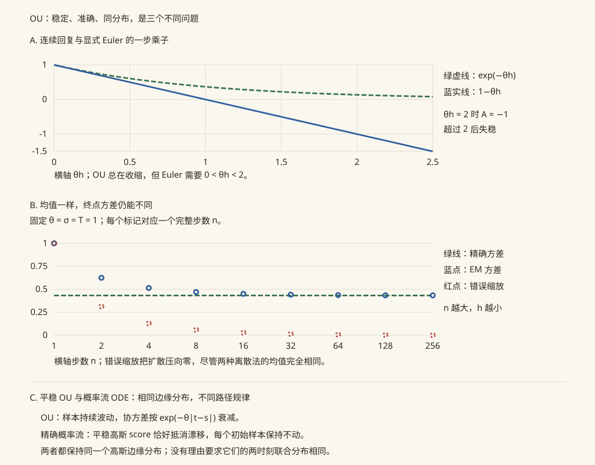

本页目录
随机微积分 II · SDE、Fokker–Planck 与扩散模型
常微分方程加上噪声项就是随机微分方程（SDE）——单条路径的演化规则。换到"上帝视角"看全体路径的分布如何演化，得到 Fokker–Planck 方程——SDE 与 PDE 的官方桥梁。本页最后与 comfy 课的扩散模型正面对账：你在 KSampler 里跑的一切，都是本页的方程。
学习层：同一份噪声，两个账本
1. 具体谜题：一条轨道很乱，概率云却有公式
想象一个被弹簧拉回原点、又不断受到微小踢动的粒子。只看一条轨道，它会在每个时刻抖来抖去；同时复制 \(256\) 个粒子，终点却会形成一团可以用高斯密度描述的概率云。这里有三个容易混在一起的问题：
- 把时间步长减半后，每一步的噪声变小了，为什么总噪声没有消失？
- 一条样本路径如何与 Fokker–Planck 方程中的密度 \(p(x,t)\) 对上？
- 如果要比较粗步长和细步长，怎样保证“差异来自离散误差”，而不是来自两次完全不同的抽样？
本学习层始终使用同一份确定性高斯噪声：一笔是单路径账本，记录一个粒子的逐步余额；另一笔是分布账本，记录许多粒子的终点直方图、均值和方差。两笔账可以互相校验，但谁也不能冒充另一笔。
2. 先做预测：在操作前写下你的判断
先不看实验的结果，预测下面四件事：
- 对 \(dX=\mu\,dt+\sigma\,dB\)，若 \(\Delta t\) 变成 \(\Delta t/4\)，正确离散式中每一步随机项的标准差变为原来的多少？一年内的步数变成多少？如果误写成 \(\sigma\Delta t Z_n\)，终点方差会向哪里走？
- 对 OU 过程 \(dX_t=-\theta X_t\,dt+\sigma\,dB_t\)，若 \(X_0>0\)，样本路径、全体样本的均值和方差分别会怎样变化？“均值回到零”是否意味着每条路径都停在零？
- 用同一份细网格噪声聚合到粗网格，与每个步长重新抽样相比，哪一种更适合测量强误差？为什么？
- 直方图若越来越像一条高斯曲线，是否已经证明了 Fokker–Planck PDE，或者证明了 \(h\to0\) 的收敛？
把最后一个问题的答案先写成“不能，因为……”，它会成为读图时的边界检查。
3. 最小模型：先对齐增量，再分开两种读法
标准布朗增量满足
于是 Euler–Maruyama（EM）是
把最后的 \(\sqrt{\Delta t}\) 换成 \(\Delta t\) 不是“更平滑的近似”，而是换了模型：在 \(T\) 固定时，错误噪声的总方差量级是
而正确噪声的总方差量级为 \(\sigma^2T\)。这正是实验中必须并排保留两种写法的原因。
本页把 OU 作为可解的最小模型。对确定性初值 \(X_0=x_0\)，
所以
若 \(X_0\) 本身是与 \(B\) 独立的随机变量，则还要把 \(e^{-2\theta t}\operatorname{Var}(X_0)\) 加入方差；实验固定 \(x_0\)，因此使用上面这一版。均值趋向零不等于路径没有波动：方差趋向 \(\sigma^2/(2\theta)\)，这正是平稳 OU 分布的宽度。
为了让不同步长的比较有意义，实验先在最高层生成固定的 \(Z_{i,r}\)。粗层一个步长包含 \(q\) 个细步时，使用
这叫 Brownian coupling：粗、细路径共享同一份布朗增量。于是可以分别记
前者比较同一噪声下的路径，后者只比较分布对测试函数的期望；它们不是同一个误差。标准结论也必须带前提：在全局 Lipschitz、线性增长等常见条件下，连续时间 EM 的 \(L^p\) 路径/终点强误差通常是 \(O(h^{1/2})\)；在系数、初值和测试函数足够光滑并满足相应增长条件时，弱误差通常是 \(O(h)\)。这些阶数不是无条件口号。OU 的扩散系数是常数，固定终点的强误差还可能出现更高的特殊阶；这不能外推为一般乘性噪声 SDE 的结论。
4. 动手验证：路径账本、分布账本与收敛账本
下方实验的默认参数是 \(T=2,\ x_0=1.4,\ \theta=1.15,\ \sigma=0.85\)，固定 \(256\) 条轨迹和固定种子。调节步长层级、选择一条路径，再按下重置观察：
- 单路径账本：蓝线使用 \(\sqrt{h}Z\)，红线故意使用 \(hZ\)，两者共享同一组聚合噪声；绿色虚线是解析均值 \(m_t\)，不是某条“真实路径”。
- 分布账本：蓝/红直方图分别是正确与错误标度的终点样本；绿色曲线是 \(N(m_T,v_T)\) 的解析密度。表格同时列出经验均值、经验方差与解析值，密度按“每单位 \(x\)”归一化。
- 收敛账本：强误差用同一噪声下的终点 RMS（相对最高层 EM 参考），弱误差在 \(\varphi(x)=x\) 下用 OU 离散方案的精确期望与解析均值的偏差。它们让“路径逐条接近”和“分布统计量接近”分开出现。
先把层级从粗调到细，回答：正确标度的分布宽度是否保持在解析方差附近？错误标度是否塌向均值？再换一条路径，检查“单条路径长得像均值”是不是一个可靠判断。最后看收敛图，并说明为什么最高层参考和固定噪声耦合仍然只是有限实验设计。
无 JavaScript 时的静态读法：实验固定 \(T=2,\ x_0=1.4,\ \theta=1.15,\ \sigma=0.85\)，由确定性 PRNG 生成 \(256\) 条最高层高斯噪声，再聚合为粗步长；重置会回到相同噪声账本。正确 EM 每步加入 \(\sigma\sqrt h Z\)，错误对照加入 \(\sigma hZ\)。单路径图应显示错误版本随 \(h\to0\) 失去随机宽度；终点直方图应与 OU 的 \(N(m_T,v_T)\) 对账，其中 \(m_T=x_0e^{-\theta T}\)、\(v_T=\frac{\sigma^2}{2\theta}(1-e^{-2\theta T})\)。收敛图把共享噪声下的强 RMS 与 \(\varphi(x)=x\) 的精确 EM 弱偏差分开；直方图中的 ensemble 均值和方差仍只是有限 Monte Carlo 估计。有限的 \(256\) 个样本、有限最高层和一条 PRNG 序列只能说明这个可复现实验的账本，不能证明 Fokker–Planck PDE、EM 收敛定理或“几乎处处”结论。
5. 误区与边界：哪些读法会越界？
- 把 \(dB\) 当成 \(dt\)。 \(dB\) 的典型大小是 \(\sqrt{dt}\)；错误的 \(dtZ\) 会让固定时间的总噪声方差消失。它不是 EM 的另一种稳定实现，而是另一条退化极限。
- 把一条路径当成密度。 一条轨道可以很久偏离 \(m_t\)；\(p(x,t)\) 是全体路径在时刻 \(t\) 的分布。直方图是对 \(p\) 的有限 Monte Carlo 近似，不是 PDE 解的证明；有限样本也不能证明步长极限。
- 把强阶和弱阶混为一谈。 强误差需要同一噪声耦合并比较路径；弱误差允许路径误差在取期望后抵消。EM 的 \(1/2\) 与 \(1\) 都依赖假设、误差范数和测试函数；OU 加性噪声的特殊改善不能写成普遍定理。
- 忘记 OU 的初值和参数条件。 这里 \(\theta>0\) 且 \(x_0\) 固定；\(\theta=0\) 变成布朗运动型方差增长，\(\theta<0\) 是不稳定漂移，解析分布仍可写但不再是均值回复和平稳情形。
- 混淆 VP-SDE 反向时间的 \(dt\)。 若正向时间为 \(t\nearrow T\)，VP 的前向漂移是 \(f(x,t)=-\frac12\beta(t)x\)，反向 SDE 常写为
这里的 \(dt\) 是负的时间增量。若改用递增的反向时钟 \(s=T-t\)、\(Y_s=X_{T-s}\)，同一件事应写成
把第一种公式的漂移照抄，却把 \(dt\) 当正数，是符号错误；两种写法不能混用。有限终点的 VP 分布只是向噪声先验靠近，只有在 schedule 和终点假设足够强时才可近似写成 \(N(0,I)\)。
6. 回到定理：实验的每个读数在说什么？
对足够光滑的测试函数 \(\varphi\)，Itô 公式和取期望把 SDE 推到生成元
再对密度做伴随运算，得到
实验的“分布账本”只是这条前向 Kolmogorov/Fokker–Planck 关系在一个时间点的抽样影像：OU 的高斯公式给出可核对的靶心，直方图给出有限样本的近似；“路径账本”则对应同一个生成元背后的随机积分过程。把两者放在同一噪声耦合下，能检查离散实现是否尊重布朗尺度，却仍然不能替代定理的假设与证明。
7. 迁移问题：把账本带到新模型
- 对 \(dX_t=-\theta(X_t-a)dt+\sigma dB_t\)，不要重新背公式：令 \(Y_t=X_t-a\)，写出 \(E[X_t]\)、\(\operatorname{Var}(X_t)\) 和平稳分布。若 \(X_0\) 有随机方差，哪一项会额外出现？
- 把噪声改成 \(\sigma(X_t,t)dB_t\)，你还会直接宣称 EM 强阶 \(1/2\)、弱阶 \(1\) 吗？请列出至少两项需要检查的系数/测试函数假设，并说明为什么同一噪声耦合仍是强误差比较的必要条件。
- 在 VP-SDE 中用 \(s=T-t\) 做反向采样时，写出 \(dY_s\) 的漂移；再解释为什么“反向公式里的 \(dt\) 为负”和“换成 \(ds>0\) 后漂移符号翻转”是同一个过程，而不是两个相互矛盾的答案。
1. SDE：带噪声的动力系统
含义 = 积分方程 \(X_t = X_0 + \int\mu\,ds + \int\sigma\,dB\)（后者是上一页的 Itô 积分）。存在唯一性：\(\mu, \sigma\) Lipschitz + 线性增长 ⇒ 强解存在唯一（与 ode-01 Picard 定理平行——压缩映像在 \(L^2\) 路径空间上重跑一遍）。
数值解（Euler–Maruyama）：\(X_{n+1} = X_n + \mu\,\Delta t + \sigma\sqrt{\Delta t}\,Z_n\)（\(Z_n \sim N(0,1)\)）——数值线 Euler 法 + 一个 \(\sqrt{\Delta t}\) 的随机项（根号：布朗增量的标度，写成 \(\Delta t\) 是新手第一错）。模拟金融路径、Langevin 采样、扩散模型生成全用它或其变体。
2. OU 过程：均值回复的原型
求解（常数变易，ode 手法照搬——乘积分因子 \(e^{\theta t}\) 再 Itô 分部）：
\(t \to \infty\)：平稳分布 \(N(0, \frac{\sigma^2}{2\theta})\)——初值被遗忘、方差收敛（对比布朗运动方差 \(t\) 发散：拉回力驯服了扩散）。三重身份：金融的利率/波动率模型（Vasicek——均值回复是"利率不会跑去无穷"的建模语言）；AR(1) 的连续时间真身（时间序列页对账：OU 按 \(\Delta t\) 采样恰是 AR(1)）；扩散模型前向加噪的骨架（见 §4）。
3. Fokker–Planck：从单路径到分布演化
同一个 SDE 的第二种读法：不问"这条路径去哪"，问"概率云怎么流"。\(X_t\) 的密度 \(p(x, t)\) 满足 Fokker–Planck 方程（前向 Kolmogorov）：
（漂移项 = 概率的输运，扩散项 = 概率的抹平；推导via Itô 引理取期望 + 分部积分。）
对账时刻：纯布朗运动（\(\mu = 0, \sigma = 1\)）给 \(p_t = \frac12 p_{xx}\)——热方程（pde-02 的"布朗运动是热方程的微观真身"至此闭环：那页的热核 = 本页方程的基本解）。平稳分布 = 令 \(\partial_t p = 0\)：OU 代入解得高斯 ✓；一般梯度系统 \(\mu = -\nabla V\) 给 \(p_\infty \propto e^{-2V/\sigma^2}\)（Boltzmann–Gibbs 分布——统计力学、模拟退火、MCMC 的共同心脏）。
4. 扩散模型：本页数学的旗舰应用（comfy 课正式对账）

前向加噪 SDE（VP-SDE，comfy 课 02 的离散加噪的连续极限）：
——时变系数的 OU 过程：均值以 \(e^{-\frac12\int\beta}\) 衰减、分布在累计噪声足够大且终点先验按此选择时才近似流向 \(N(0, I)\)（§2 的平稳分布机制；那页的 \(\sqrt{\bar\alpha_t}\) 与 \(1-\bar\alpha_t\) 就是本页 OU 解的均值方差）。
反向去噪 SDE（Anderson 1982，comfy 课 03 引用的那条定理）：
这里采用的是从 \(t=T\) 走回 \(t=0\) 的约定，所以 \(dt<0\)；若以 \(s=T-t\) 作为递增时钟，令 \(Y_s=x_{T-s}\)，漂移改写为 \(\frac12\beta(T-s)Y_s+\beta(T-s)\nabla\log p_{T-s}(Y_s)\)。同一条反向过程的两种记号不可把 \(dt\) 的方向和漂移符号拆开使用。
时间倒流的 SDE 存在，且只需多知道一项——score（沿途每个时刻分布的对数梯度）；神经网络 \(\epsilon_\theta\) 学的正是它（comfy 课 02 §3.5 的等价性）。概率流 ODE：存在与反向 SDE 边际分布完全相同的确定性 ODE（把噪声项换成再加一份 score 漂移）——采样器下拉框里 ODE 系与 SDE/ancestral 系的分野（comfy 课 03 的表格），在本页是同一个 Fokker–Planck 方程的两种路径实现。Langevin 动力学（\(dx = \nabla\log p(x)\,dt + \sqrt2\,dB_t\)：以 \(p\) 为平稳分布的 SDE——§3 Boltzmann 公式反用）是 score-based 采样的原型，也是 MCMC 家族的一员。
5. 典型例题
例 1（E–M 模拟设计） 模拟 GBM（\(\mu = 0.05, \sigma = 0.2\)）一年 252 步：\(S_{n+1} = S_n(1 + 0.05\Delta t + 0.2\sqrt{\Delta t}Z_n)\)，\(\Delta t = \frac{1}{252}\)——注意也可用上一页的显式解精确模拟（对数正态逐步采样），有闭式解时别用数值离散（数值线的教诲）。
例 2（OU 半衰期） Vasicek 利率 \(\theta = 0.5\)/年：偏离的半衰期 \(= \frac{\ln 2}{\theta} \approx 1.4\) 年——"利率冲击约一年半消化一半"，均值回复速度的可读化（把 \(\theta\) 翻译成半衰期是汇报模型的好习惯）。
例 3（平稳分布验证） 双井势 \(V(x) = \frac{(x^2-1)^2}{4}\) 的 Langevin：\(p_\infty \propto e^{-2V/\sigma^2}\) 双峰——粒子在两口井间偶尔跳跃（隐喻：非凸损失面上 SGD 的噪声帮助逃离局部井，优化 II 的那句话在此有了严格模型）。\(\blacksquare\)
下一页：把这套演算对准市场——Delta 对冲推出 Black–Scholes 方程，风险中性定价，以及期权公式里每个符号的含义。